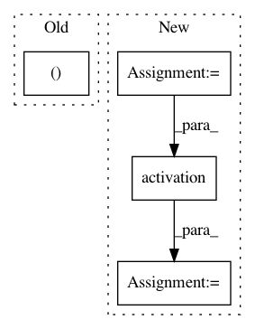

47ed18a3af8be20dce91286a331d4671074ee0ca,keras/layers/core.py,TimeDistributedDense,get_output,#TimeDistributedDense#Any#,783
Before Change
X = self.get_input(train)
output = self.activation(K.dot(K.permute_dimensions(X, (1, 0, 2)),
self.W) + self.b)
return K.permute_dimensions(output, (1, 0, 2))
def get_config(self):
config = {"name": self.__class__.__name__,
After Change
last_output, outputs, states = K.rnn(step, X, [], masking=False)
outputs = self.activation(outputs)
return outputs
def get_config(self):
config = {"name": self.__class__.__name__,
In pattern: SUPERPATTERN
Frequency: 3
Non-data size: 4
Instances
Project Name: keras-team/keras
Commit Name: 47ed18a3af8be20dce91286a331d4671074ee0ca
Time: 2015-11-26
Author: francois.chollet@gmail.com
File Name: keras/layers/core.py
Class Name: TimeDistributedDense
Method Name: get_output
Project Name: onnx/onnxmltools
Commit Name: 80e1d0aba201d45ba32542327ab1a63e074a759e
Time: 2018-05-11
Author: wschin@outlook.com
File Name: tests/end2end/test_single_operator_with_cntk_backend.py
Class Name: TestKeras2CoreML2ONNX
Method Name: test_activation_4d
Project Name: onnx/onnxmltools
Commit Name: 80e1d0aba201d45ba32542327ab1a63e074a759e
Time: 2018-05-11
Author: wschin@outlook.com
File Name: tests/end2end/test_single_operator_with_cntk_backend.py
Class Name: TestKeras2CoreML2ONNX
Method Name: test_activation_2d